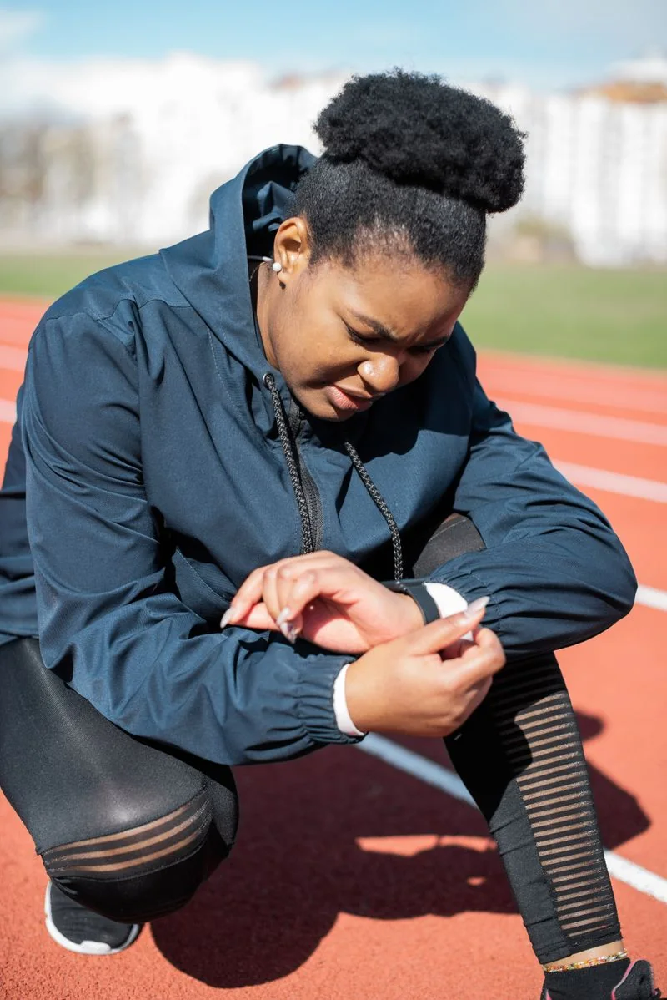

BAŞLANGIÇ SEVİYESİNİ
BELİRLİYORUZ
Her öğrencinin teknik, fiziksel, sanatsal veya sportif performans düzeyi eğitim sürecinin başında kayıt altına alınır.

ÖĞRENCİ YOLCULUĞU
Nova’da performans takibi; öğrencinin gelişimini yalnızca sonuçlarla değil, süreç boyunca elde edilen veriler, gözlemler ve gerçek performans deneyimleriyle izleyen bütüncül bir sistemdir.
Her öğrencinin teknik, fiziksel, sanatsal veya sportif performans düzeyi eğitim sürecinin başında kayıt altına alınır.
Öğrencinin ilerlemesi belirli dönemlerde tekrar değerlendirilir; performansındaki gelişim, güçlü yönler ve ihtiyaç duyulan alanlar net biçimde belirlenir.

Dansçı, müzisyen, oyuncu veya sporcu aynı kriterlerle değerlendirilmez. Her branş için alanına özgü teknik ve performans göstergeleri kullanılır.

Sahne, müsabaka, turnuva, prova, proje ve yarışma performansları öğrencinin gelişim dosyasına dahil edilir.

Elde edilen sonuçlar yalnızca raporlanmaz; öğrencinin eğitim planını, çalışma yoğunluğunu ve bir sonraki hedefini yeniden şekillendirmek için kullanılır.

Performans sonuçları, değerlendirmeler ve gelişim kayıtları Nova Öğrenci Pasaportu ve dijital portfolyo sisteminde uzun dönemli olarak saklanır.

Öğrenci ve veli, gelişim süreci hakkında düzenli ve anlaşılır geri bildirim alır; böylece ilerleme şeffaf biçimde takip edilir.

Performans sonuçları; ölçme-değerlendirme uzmanları, akademisyenler, sanatçılar, sporcular, antrenörler ve branş uzmanlarının katkısıyla gözden geçirilir.

Öğrencinin gelişimi, yurt dışındaki konservatuvar, sanat okulu, spor akademisi ve üniversitelerin performans beklentileri dikkate alınarak yönlendirilir.

Nova’da performans; ölçülür, kaydedilir ve gelişime dönüştürülür.